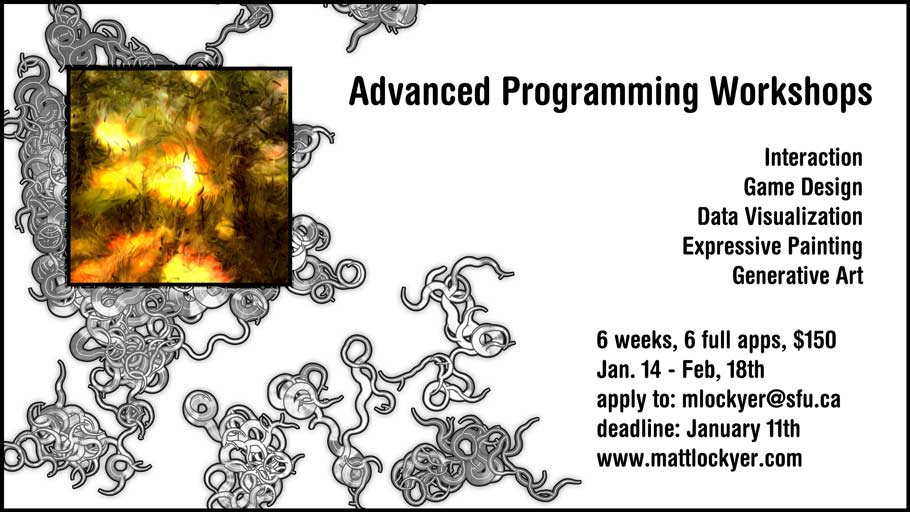

Ever had a great idea for a course or Capstone project and not had the programming skills or experience necessary to carry it out? In this exciting 6 week workshop series, you will build 6 full applications from start to finish using the Processing programming language. The applications will cover a wide variety of topics: OOP, Games, Images, Sound, Generative Art, Data Visualization, and Interaction. Each application is designed to provide you with the proper scaffolding for future versions and more advanced works. You'll learn valuable software design patterns that can be applied to any project. There's a lot more to programming than simply getting things to work and putting images on the screen. After these workshops, you will be able to produce truly innovative interactive works.
This workshop will be taught in Processing.
Workshop Outline:
• Expressive Painting - OOP Program Structure and Design Patterns
• Arcade Game - Game Design Concepts
• Visualization - Images, Camera, Sound
• Generative Poster - Generative Design Patterns
• Interactive Data Visualization - Twitter, Flickr
• Interactive + Generative Music Visualization
Samples:
IAT 265 Fall 2011 Course Materials:
http://www.multimediaprogramming.org
Generative Music Visualization:
http://www.youtube.com/watch?v=ySTm5ebrFlM
Generative Posters:
http://mattlockyer.com/2011/01/15/painterly-desktops/
Instructor's Website:
http://www.mattlockyer.com